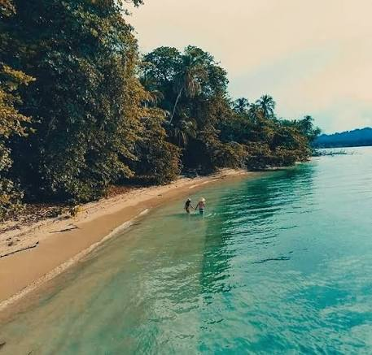

Información para Visitantes
Ubicado en Talamanca, Provincia de Limón. Abierto todos los días en horario regular para el disfrute de locales y extranjeros.

Planifica tu visita al parque
Ubicado en Talamanca, Provincia de Limón. Abierto todos los días en horario regular para el disfrute de locales y extranjeros.
